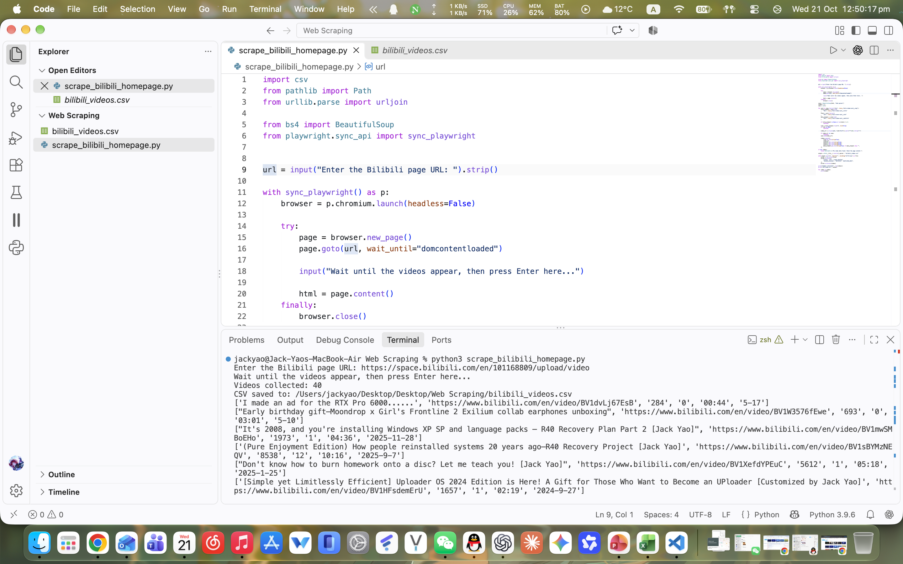
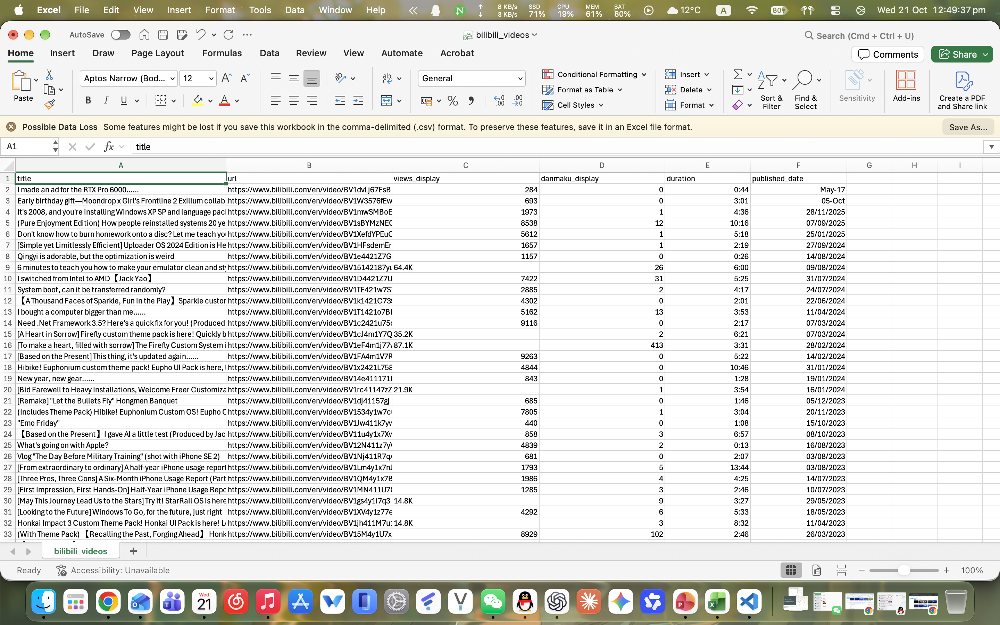
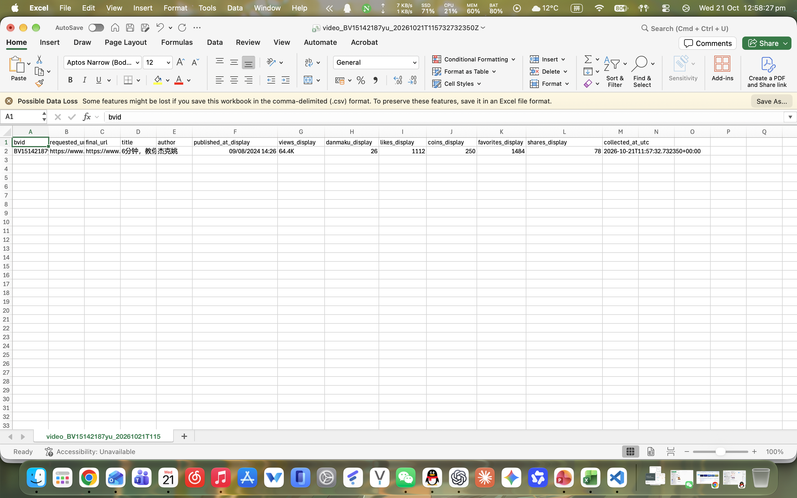
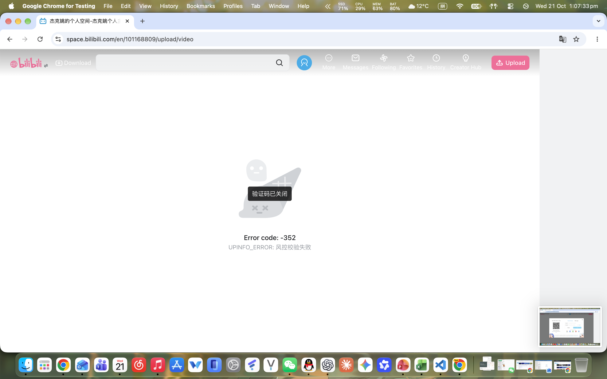
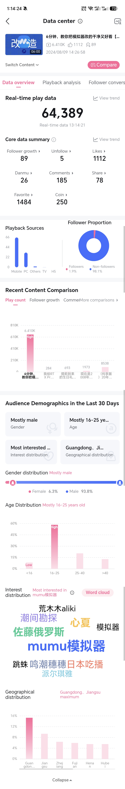

Week 3: Web Scraping
Before this workshop, I thought web scraping could collect any data. After trying it myself, I realised that I first needed to decide what information I wanted and then write a script for specific pages and fields. It could not simply collect everything I wanted.
I used videos from my own Bilibili account as a sample and wrote two Python scripts. The first collected titles, publication dates, view counts, danmaku counts and video durations from the video list on my profile page. The second collected information from an individual video page, including the title, creator, publication date, view count, danmaku count, likes, coins, favourites and shares. These scripts showed me that different pages on the same platform display different information, so I needed to adjust my approach depending on what I wanted to collect.







While developing and running the scripts, I encountered pages asking me to log in or displaying errors. Refreshing the page allowed me to continue. This also made me aware that platforms can restrict automated scraping through measures such as login checks and limits on access frequency. Although I cannot be sure whether these measures caused the errors I encountered, the experience showed me that successful scraping also depends on page loading and platform access restrictions. A script may not collect data successfully every time.





Another limitation was that my results contained fewer types of data than Bilibili’s official creator tools provide. Some data available through those tools does not appear on public video pages, so my two scripts could not collect it. This changed my previous understanding of web scraping: it can help me collect specific information displayed on webpages, but it does not give me access to all the data a platform holds. If I use this method for research in the future, I will need to consider whether the available data can answer my questions.

I also chose my own account to avoid collecting other people’s information. I felt that I did not have the right to collect information from other people’s accounts, while using my own account meant I had a clearer understanding of where the videos came from. This exercise made me realise that collecting data involves more than considering what is technically possible. I also need to think about whose information is involved and how it will be used and shared.